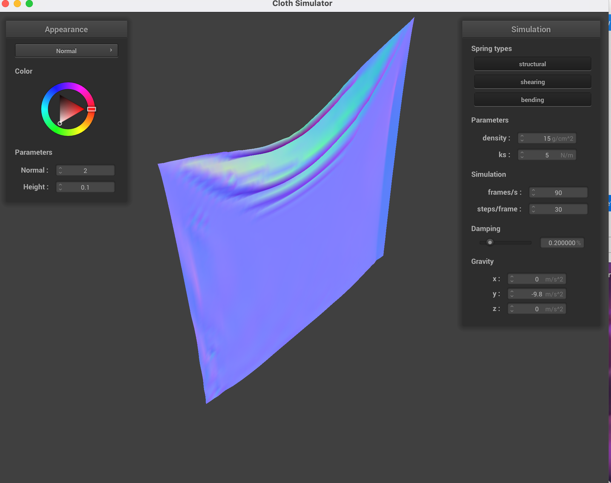
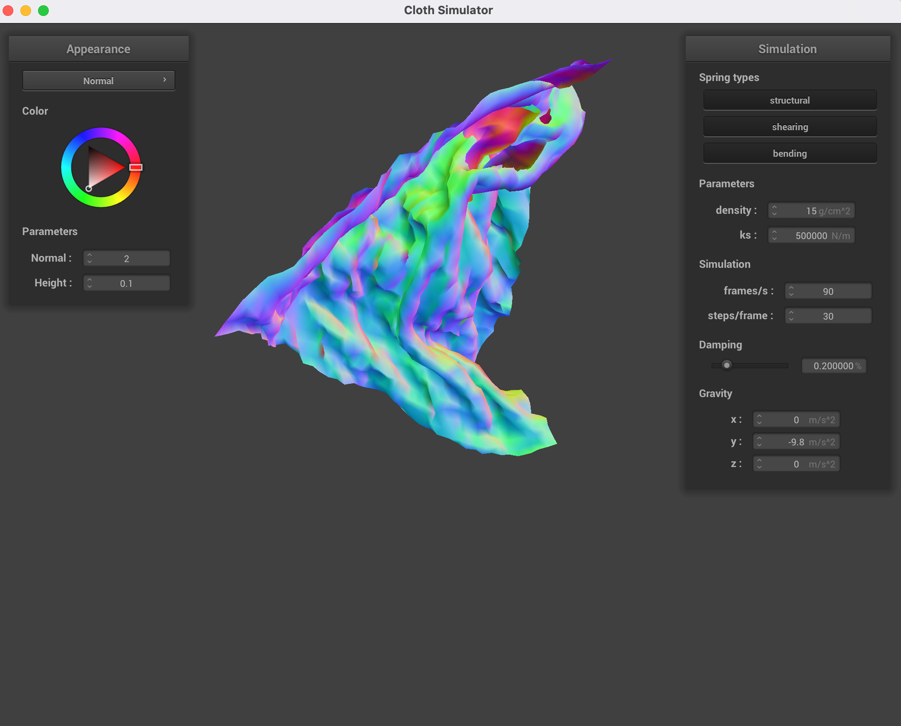
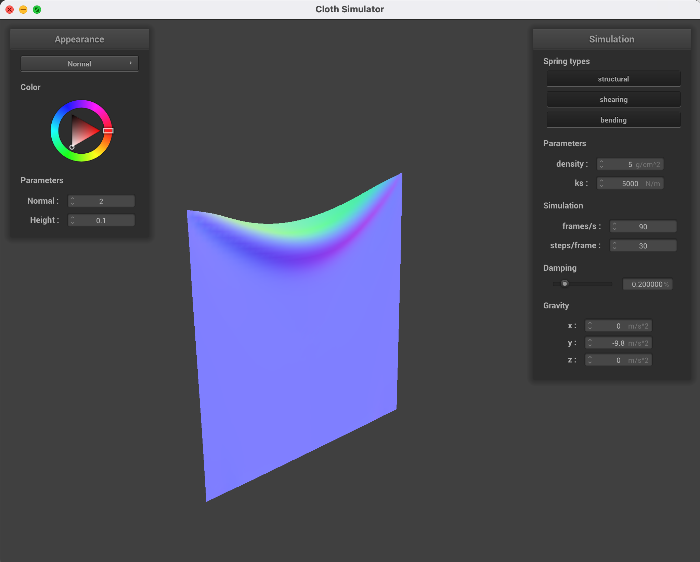
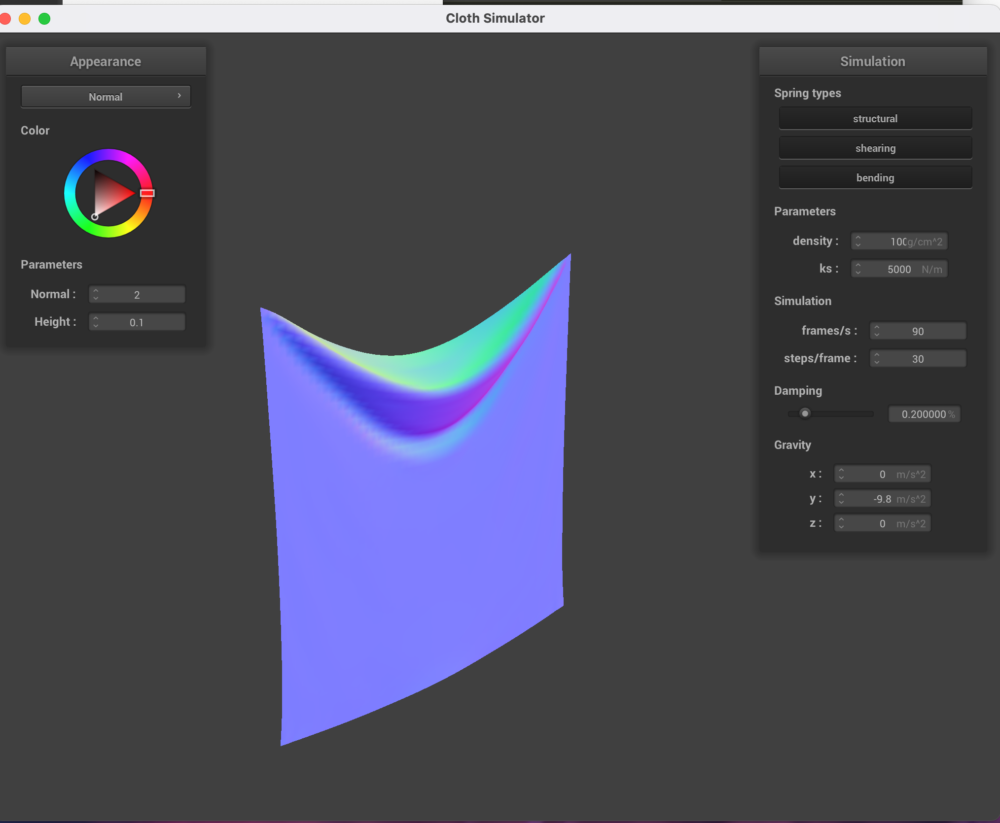

In this project, we implemented a cloth simulator. [insert insert]
yaaaaaaaaaaaaaa
Here are the deliverables.
For this part, we implemented the core logic of the simulation using Verlet integration.
For the first deliverable, we experimented with different hyperparameter settings on pinned2. First we set the spring density to a very small value (5) and a huge value (500,000). The first had the effect of introduce large ripples and oscillations that would not settle out due to the low spring constant, which was interesting. The second resulted in this crazy result that you can see where the cloth folds in on itself. It must be because a large spring constant results in more internal tension than gravity can overcome. We also tried setting a more reasonable value (like 50,000) and it simply falls down directly without rippling much.
|

|

|
We did the same thing for density, setting it to a small value like 5 and a large one like 100. It had the effect of pulling the cloth together tighter and letting it hang or droop more/less. For lower values, the cloth sagged less, while larger values sagged much more and had less ripples.
|

|

|
For this project,